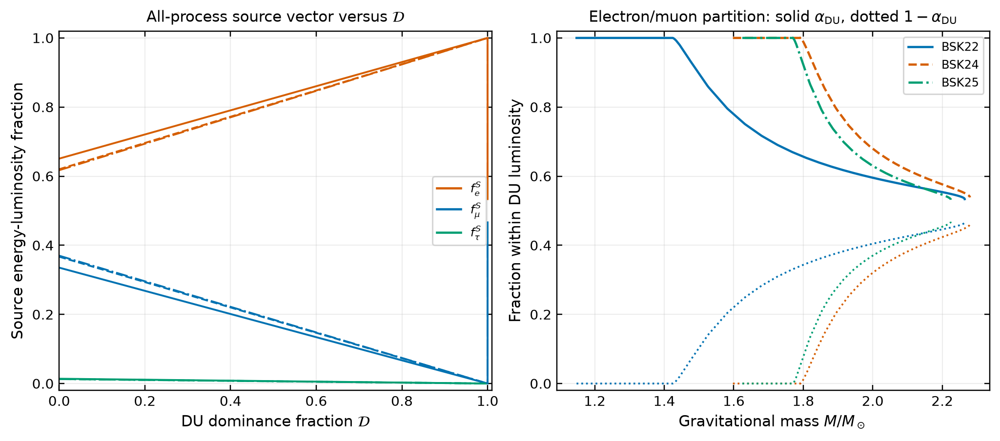
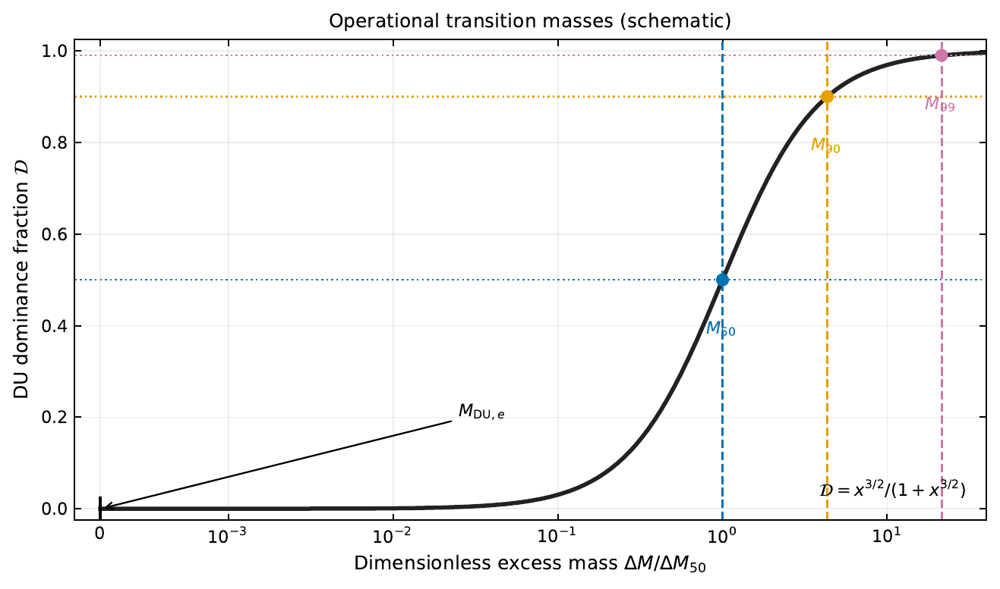
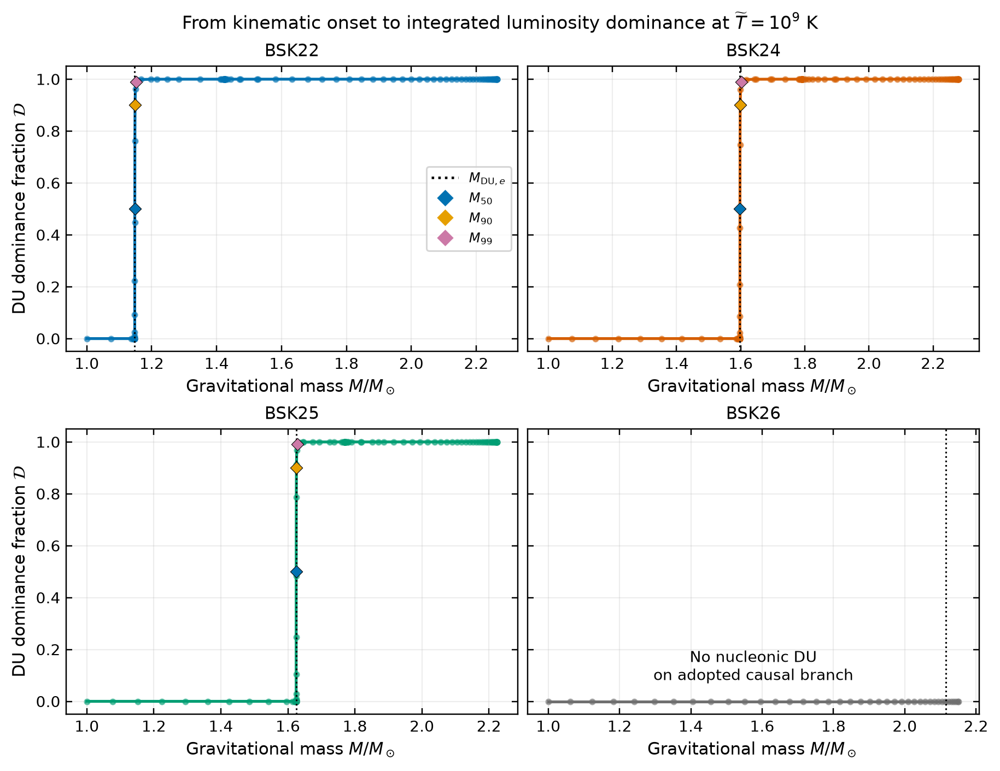
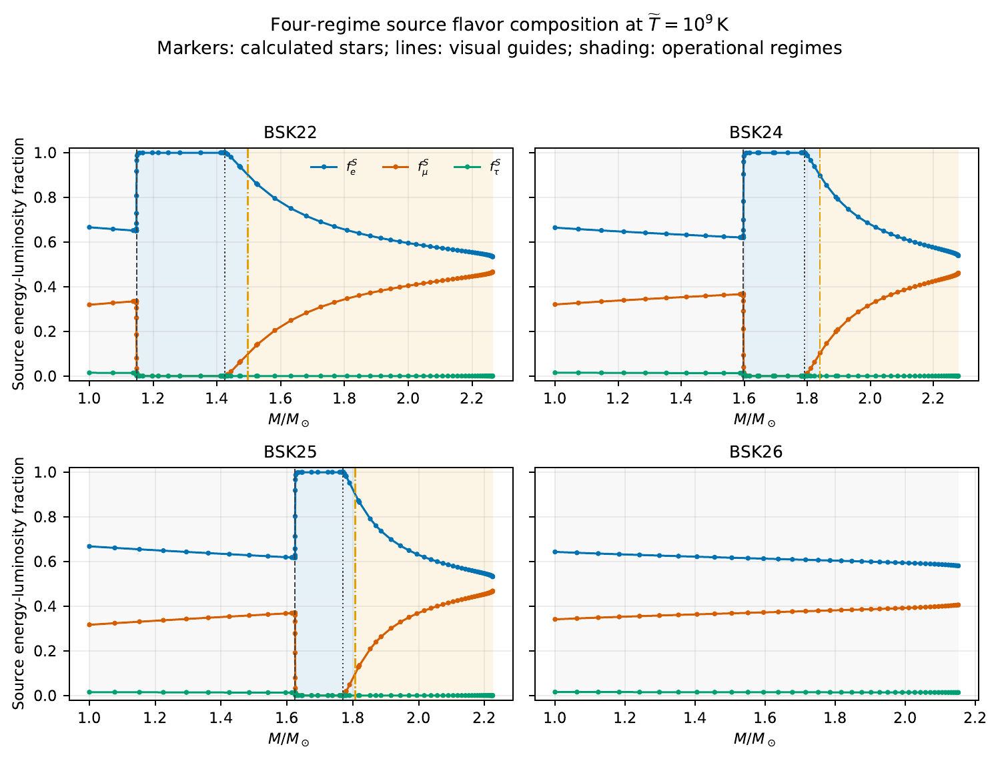
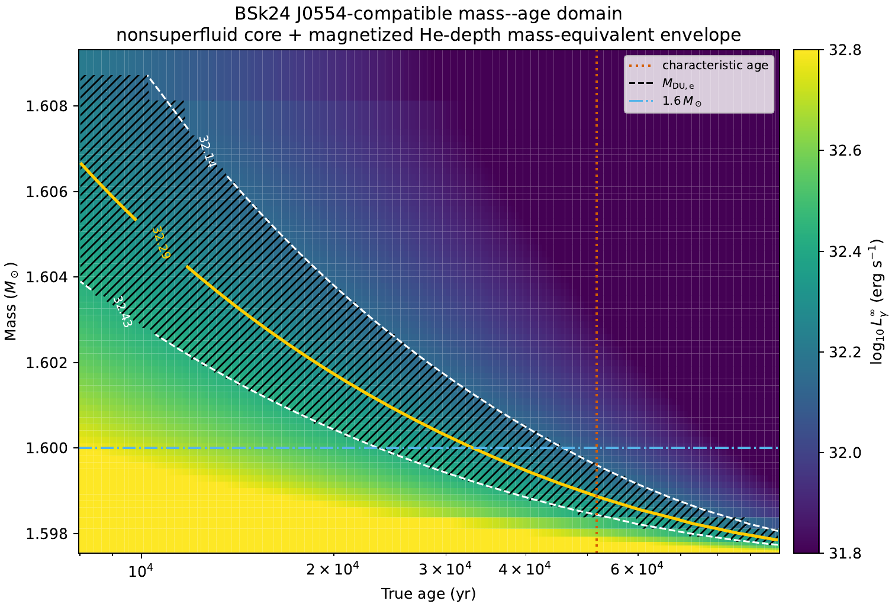
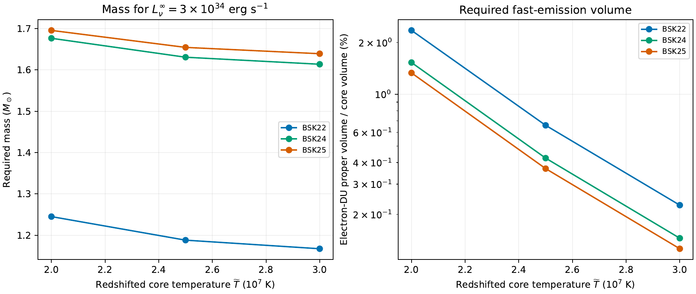
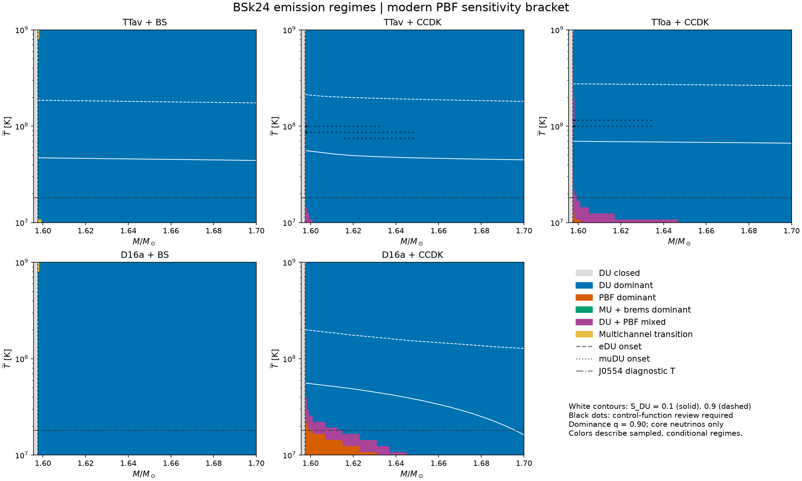

01
DU 何時主導
把局部運動學門檻轉成全星積分光度的操作性質量。
三篇工作串接：光度主導、源端味組成與星體條件式反演
Jia-Yu Young · T. C. Liu
Department of Applied Physics, National Pingtung University

把局部運動學門檻轉成全星積分光度的操作性質量。
分開電子、緲子與濤子源端能量光度，追蹤質量與 EOS 依賴。
用 J0554 與 MXB 1659–29 建立條件式質量與作用體積反演。
DU 在星心剛被允許時，發射區域的體積仍趨近零。局部高發射率因此不能直接回答全星光度比例。
M50：快、慢過程各占一半
M90：DU-only 遺漏 10% 核心中微子光度
M99：DU-only 遺漏 1% 核心中微子光度


𝒟 ≈ 0：慢過程決定源端比例，電子約 2/3、緲子約 1/3，濤子僅小量。
𝒟 → 1：慢過程被稀釋；在緲子 DU 開啟前，源端幾乎全為電子通道。
M > MDU,μ：緲子 DU 子核心增長，電子／緲子 DU 逐步接近約 54%／46%。



同一套微物理：兩例都使用 EOS、TOV 結構與逐通道積分光度。
不同觀測切片：J0554 限制表面熱史；MXB 較直接限制核心 Lν∞。
共同限制：目前都是條件式反演，並非直接量到 DU 或精確質量。
小型 DU 核提供 99.9974% 核心中微子光度，但當時 Lν/Lγ ≈ 0.17。
因此核心的 DU 主導，不等於星體當下由中微子主導總能量損失。
Tcore∞ = 2.5 × 107 K 時：
BSk22 / 24 / 25 所需質量為
1.188 / 1.631 / 1.654 M⊙
電子 DU proper-volume fraction 僅
0.660% / 0.425% / 0.369%
BSk24 的核心溫度由 2.0 升至 3.0 × 107 K，反演質量由 1.676 降至 1.614 M⊙。
這是三點條件式敏感度，不是核心溫度後驗；BSk26 在同一基準不可達。
| 研究層次 | 輸入 | 得到的量 | 新增的判讀能力 |
|---|---|---|---|
| 光度主導 | EOS、恆星質量、核心溫度 | 𝒟 與 M50 / M90 / M99 | 區分運動學開啟與積分光度主導 |
| 味組成 | 逐通道中微子光度 | fνS、αDU、四個光度區域 | 追蹤電子與緲子 DU 的質量演化 |
| 星體反演 | 表面光度或核心功率錨點 | 質量、年齡與 DU 作用體積 | 把模型結果轉成可被後續觀測檢驗的區域 |
共同結論：極小的中心 DU 核足以改變核心中微子光度與熱觀測，但反演必須保留模型條件。

同一個 BSk24 EOS，不同 pairing 模型會重新安排 DU 與 PBF 的主導區域。
先讀座標與顏色：X 軸是重力質量，Y 軸是紅移核心溫度。藍色代表 DU ≥ 90%，橘色代表 PBF ≥ 90%，紫色是 DU–PBF 混合區。白線標出 SDU = 0.1 與 0.9。
目前最清楚的結構：多數參數區仍由 DU 主導；但 D16a+CCDK 在低溫、剛越過 DU 門檻時，隨質量增加依序出現 PBF 主導、混合、DU 主導。
抑制不等於退出主導：在 1.6 M☉，TTav+CCDK 與 D16a+CCDK 都有 SDU ≈ 5.68×10−6，但 FDU 分別為 99.665% 與 10.204%。
因此 M50、M90、M99 可擴充成質量—溫度—pairing 的條件式主導邊界。
183,872 列後處理已通過；控制函數拼接、低溫 1.60% 收斂差與 PBF 處方仍是科學 Gate。彩色階梯不是已收斂的物理相變。
直接 Urca 的研究需要分清三件事：何時被允許、何時主導積分光度，以及何時能解釋特定熱觀測。
三篇工作分別建立這三層的定量座標，並共同預測：極小的中心 DU 核可能具有巨大的中微子光度效應。
謝謝聆聽